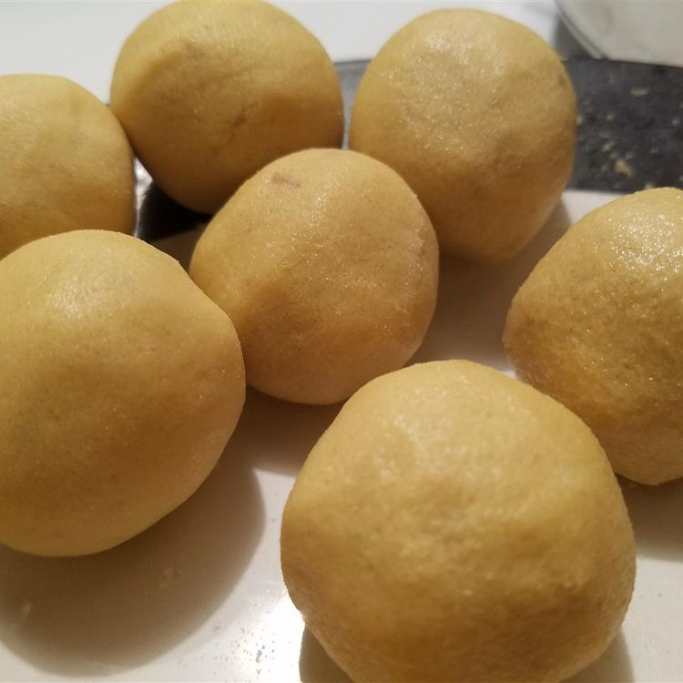

Besan Ladoo
Home

Description
A delicious Indian sweet, commonly gifted during celebrations like Diwali. I got this recipe from my neighbor when I lived in India. She always brought me sweets that she made herself.
Ingredients
- 2 cups chickpea flour (besan)
- 1 cup clarified butter (ghee)
- 1 cup white sugar, or to taste
- 2 teaspoons finely chopped pistachio nuts
- 1 teaspoon finely chopped cashews
Steps
- Stir the chickpea flour and clarified butter together in a saucepan over medium-low heat until the mixture smells toasty, about 10 minutes. Set aside until cool enough to handle.
- Stir in the sugar, pistachios, and cashews until evenly mixed. Form the mixture into small balls the size of large cherries. Use some pressure when forming the balls so they don't come apart.